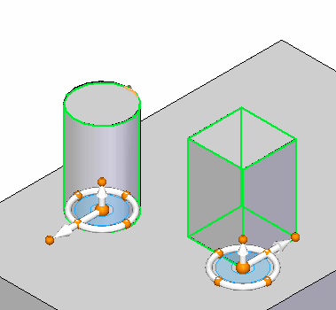

Place a feature library member into another document
For ordered members:
-
Open the Solid Edge document into which you want to place the stored feature library member.
-
Make sure you are in the ordered environment.
-
Click the Feature Library tab.
-
Select the ordered feature library member you want. Hold the left mouse button down, drag the feature library member from the Feature Library page into the Solid Edge window, and then release the mouse button.
Note:The display updates to show the profile for the feature library member attached to the cursor. The Feature Set Information dialog box appears.
-
Position the cursor over the face you want, and then click to position the profile for feature library member.
Note:The profile is positioned on the selected face.
-
If any dimensions that reference edges that are external to the feature library member exist, select an edge for each dimension.
-
If the library member consists of more than one feature, repeat steps 5 and 6 as required.
-
On the Feature Set Information dialog box, click Close, and then click the Select Tool button.
For synchronous members:
-
Open the Solid Edge document into which you want to place the stored feature library member.
-
Make sure you are in the synchronous environment.
-
Click the Feature Library tab.
-
Select the synchronous feature library member you want. Hold the left mouse button down, drag the feature library member from the Feature Library page into the Solid Edge window, and then release the mouse button.
Note:The display updates to show the synchronous feature library member attached to the steering wheel. The steering wheel is in the same position as when it was added to the feature library.
Note:When selecting a synchronous feature, it is important to position the steering wheel plane on the selected feature at a point that would be coincident with a face to be attached to. Also make sure the secondary axis points in a direction as shown.

-
Position the steering wheel over the face you want, and then press the F3 key to lock the face.
-
Position the member on the locked face.
-
Use the Attach command to attach the detached geometry to the model.